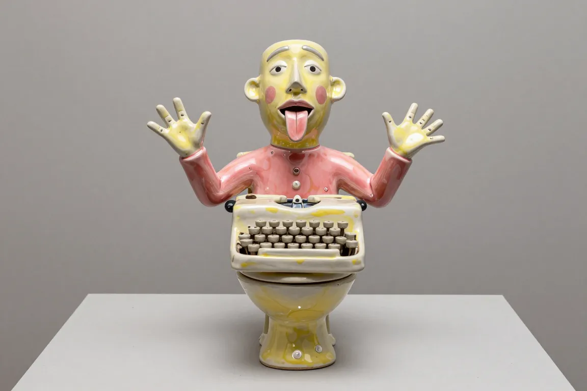

керамика · 1961–1985 · также: Керамика фанк-арта, Калифорнийская фанк-керамика, Фигуративная керамика Района залива
Калифорнийская керамическая скульптура ручной лепки, превращающая унитазы, пишущие машинки, автопортреты и дурной вкус в громкие, грубые и смешные фигуры. Яркие низкотемпературные глазури и подтёки сохраняют глину грубой.

Главная идея
Глина — грубый и смешной материал, поэтому скульптор может сделать унитаз, пишущую машинку или собственный бюст и обращаться с высоким искусством как с шуткой.
Принципы дизайна
Лепите фигуру вручную жгутами и пластами и оставляйте следы пальцев и инструмента.
Берите сюжет из повседневной жизни или из лица самого автора: унитаз, пишущая машинка, питомец, бюст.
Делайте форму комковатой, толстой и немного неправильной, с большой головой и маленькими руками.
Покрывайте глину громкими низкотемпературными глазурями и надглазурными фарфоровыми красками: ярко-розовой, жёлтой и зелёной.
Пусть глазурь течёт, капает и собирается лужами, оставляйте пузыри и проколы.
Добавляйте шутку в названии или в небольшой детали: текст, каламбур или грубое слово на основании.
Делайте вещь высотой 30–120 см, одной фигурой или небольшой группой на простом основании.
Обжигайте вещь несколько раз и добавляйте краску и глазурь слоями, пока поверхность не станет богатой.
Антипаттерны
Тонкая симметричная ваза в тихой глазури
Полированная фабрично-гладкая поверхность без следов инструмента